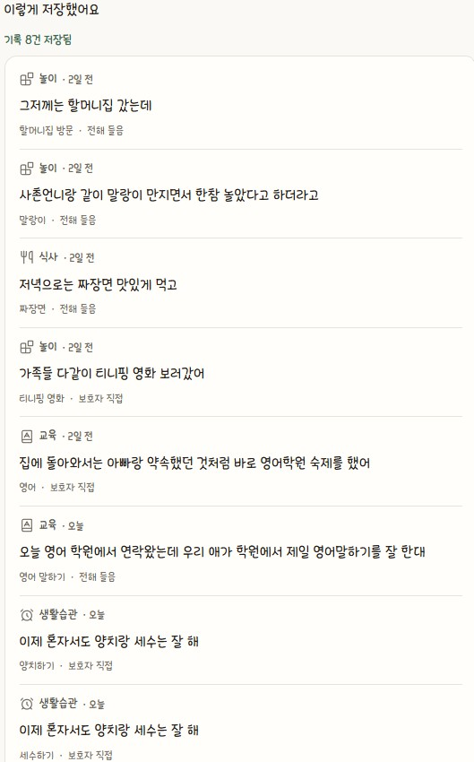
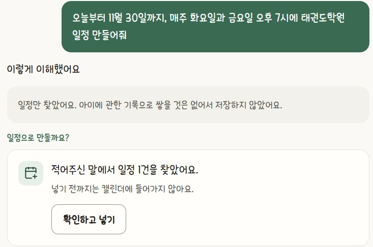
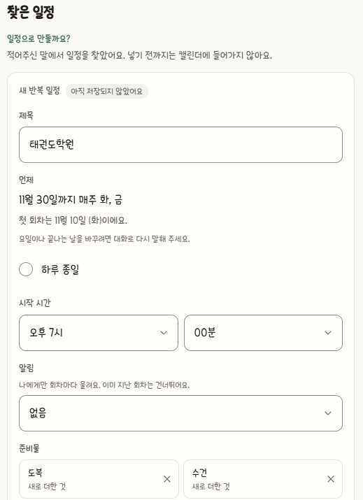
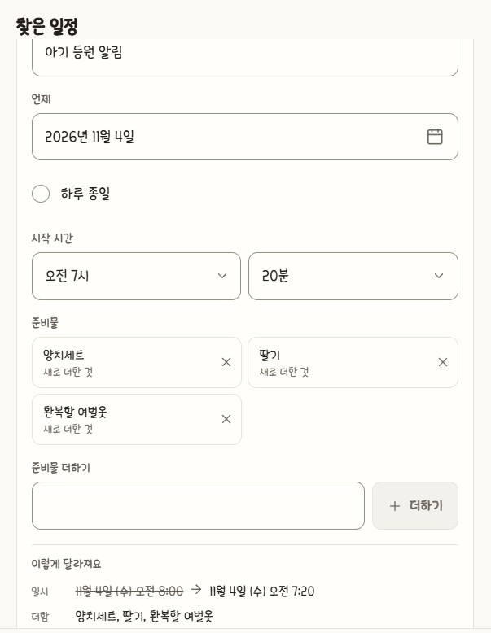
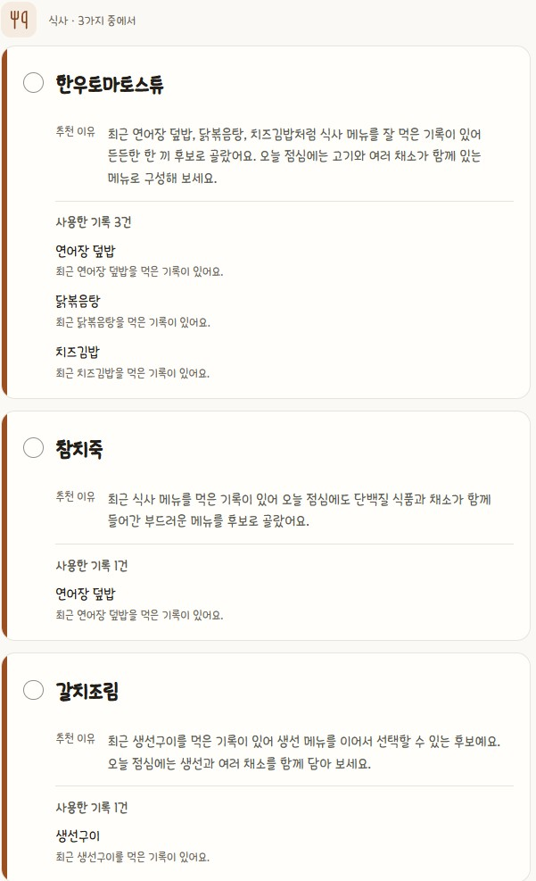
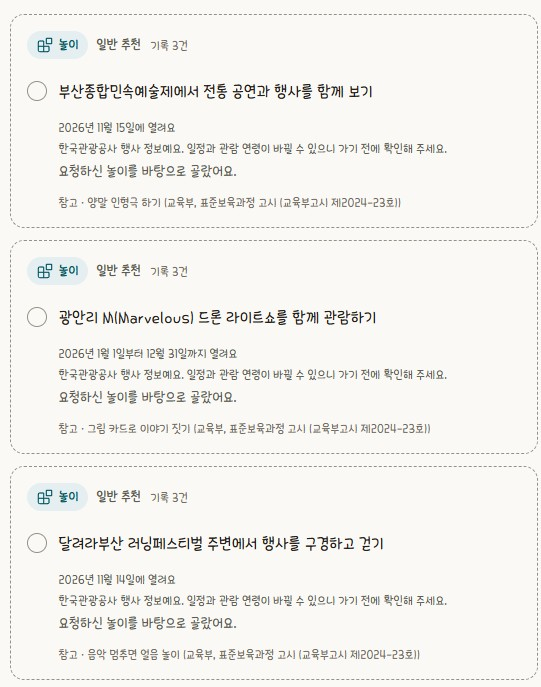
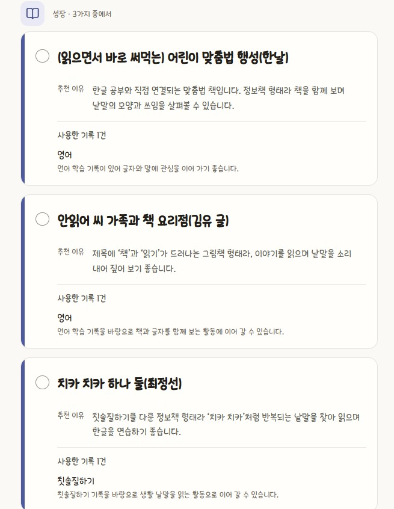
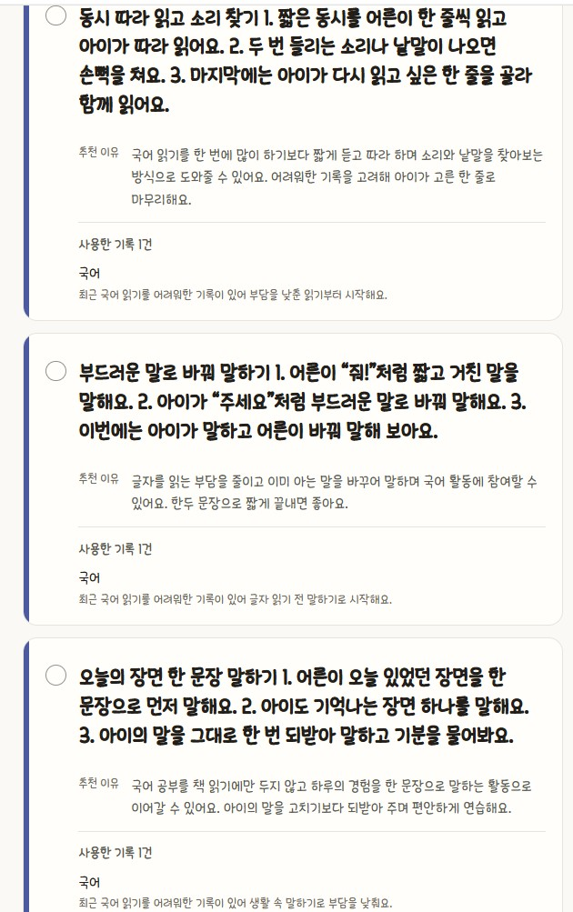
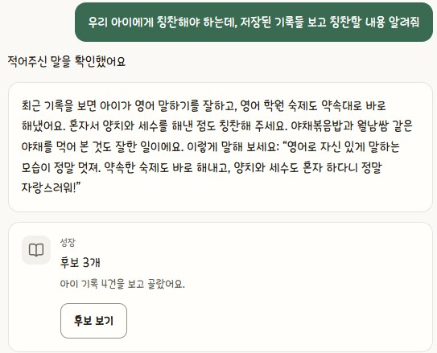
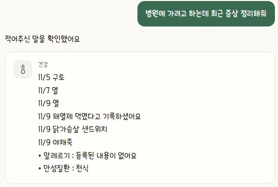

만 1~5세 자녀를 키우는 부모님께
아이캐치
말하듯 남기면,
AI가 알아서 정리해 드려요
이렇게 한마디만 적으면
알아서 나눠 담아요
칸을 채우거나 항목을 고를 필요가 없어요
긴 일기처럼 적어도 괜찮아요

탭하면 크게 보여요놀이 · 식사 · 교육 · 생활습관으로 나눠서 저장해요
일정도 말로 만들어요

탭하면 크게 보여요‘확인하고 넣기’를 눌러야 캘린더에 들어가요
요일·시간·준비물까지 찾아줘요

탭하면 크게 보여요앱에서는 확인하면 알림도 가요
바꾼 내용이 한눈에 보여요

탭하면 크게 보여요시간 변경, 준비물 추가도 말로 수정해요
먹은 기록을 보고 메뉴를 골라요

탭하면 크게 보여요추천 이유와 사용한 기록을 함께 보여드려요
주말에 갈 곳도 찾아드려요

탭하면 크게 보여요공공 행사 정보와 표준 교육과정을 근거로 해요
함께 읽을 책을 추천받아요

탭하면 크게 보여요실제 책 제목과 지은이로 알려드려요
아이가 어려워하는 부분을 도와요

탭하면 크게 보여요집에서 바로 해볼 수 있는 단계별 활동이에요
오늘 아이에게 해줄 칭찬 한마디

탭하면 크게 보여요쌓아둔 기록이 칭찬거리가 돼요
병원 가기 전, 증상이 한 번에

탭하면 크게 보여요증상 · 먹인 약 · 식사 · 알레르기를 날짜순으로
부모님 마음 놓이도록
- 🔒갤러리는 보지 않아요알림으로 기록을 재촉하지도 않아요
- 🥜알레르기는 늘 빼고 추천해요등록한 알레르기 식품·활동은 자동으로 걸러요
- 📚믿을 만한 근거로 추천해요농식품정보원 · 농촌진흥청 · 교육부 고시 과정
- 🔍추천 이유를 보여드려요어떤 기록을 썼는지 함께 확인해요
- ✏️채팅 한마디로 고치고 지워요잘못 기록된 내용도 바로 수정
- 👨👩👧가족과 실시간으로 공유해요일정과 식단을 양육자 모두가 함께
이렇게 시작해 보세요
-
1
있었던 일을 편하게 여러 건
오늘 혼자 양치하고 잠옷도 입었어
-
2
아이가 좋아하는 것도 알려 주세요
공룡 좋아해
브로콜리 싫대
-
3
추천을 받아 보세요
아이랑 할 놀이
우리 아이에게 추천할만한 교육활동
기록이 쌓일수록 추천이 다양해지고 우리 아이에게 더 잘 맞아요
카톡 보내듯 적어 주세요
점심은 거의 다 먹었고, 낮잠 자고 나서 기침을 조금 했대
식사와 건강 기록으로 나눠 저장해요
오늘 혼자 양치하고 잠옷도 입었어
생활 기록 2건으로 저장해요
브로콜리 싫대
싫어하는 음식으로 기록하고 다음 메뉴에 반영해요
열이 38.2도야
체온과 함께 건강 기록으로 저장해요
“열이 나”처럼 체온이 빠지면 몇 도인지 물어봐요
새벽 3시에 해열제 먹였어
먹인 약 기록으로 저장해요
간식으로 딸기케이크 먹였어. 저녁엔 뭘 먹일까?
먼저 기록하고, 그걸 반영해 저녁 메뉴를 골라요
일정은 확인해야 저장돼요
금요일 오전 10시에 물놀이 있어. 수영복이랑 여벌옷 챙겨야 해
일정 카드가 나와요. 확인을 눌러야 캘린더에 들어가요
내일 무슨 일정 있어?
내일 일정을 알려 드려요
운동회 시간을 오전 10시로 바꿔줘
바뀌기 전과 후가 보이는 카드가 나와요
운동회에 물통이랑 모자도 챙겨야 해
준비물에 더한 카드가 나와요
운동회 준비물 체육복 챙겼다고 체크해줘
바로 체크돼요
먹을 것, 놀이, 책 물어보세요
오늘 저녁 뭐 먹일까?
메뉴 3개를 골라 드려요. 등록한 알레르기는 늘 빼요
땅콩소스 먹여도 될까?
등록한 알레르기, 나이 기준과 겹치는지 알려 드려요
이번 주 영양 균형 어때?
어떤 음식이 적게, 많이 나왔는지 말해 드려요
비 오는 날 집에서 할 놀이 추천해줘
요즘 좋아하는 것에서 이어지는 놀이 3개
공룡 좋아하는데 책 추천해줘
실제 책 3권 (제목 · 지은이)
긴장하면 손톱을 물어뜯어. 어떻게 고쳐?
상황에 맞춘 방법 3개. 언제 그러는지 안 적으면 한 번 물어봐요
기록을 모아 정리해 드려요
열 언제부터 났더라?
최근 이틀 체온을 시간순으로 정리해요
내일 소아과 가는데 최근 증상 정리해줘
증상 · 먹인 약 · 최근 식사 · 알레르기를 날짜순으로
영유아 검진 언제 받아야 해?
지금 받을 검진 차수와 이 시기 권장 접종
시터한테 줄 알레르기랑 먹는 약 정리해줘
알레르기 · 만성질환을 담은 응급 카드
6개월 동안 얼마나 컸어?
잰 날짜와 키 · 몸무게를 그대로 보여 드려요
이런 말에는 이렇게 답해요
숨을 잘 못 쉬어 · 경련을 해
지금 바로 119에 연락하거나 가까운 응급실로 가세요
어제부터 계속 기침하는데 폐렴이야?
진단과 약 용량은 답하지 않고 병원·약사 확인을 안내해요. 증상은 기록해 둬요
우리 애 우유 알레르기 있어. 등록해줘
아이 탭에서 직접 넣도록 안내하고 그 화면으로 가는 버튼을 드려요
오늘 불고기 먹었다고 한 기록 지워줘
지울 기록이 체크된 카드가 나와요. 삭제 버튼을 눌러야 지워져요
추천해준 메뉴 재료 주문해줘
주문 · 예약 · 연락은 대신 해 드릴 수 없어요
나 오늘 너무 피곤해
아이가 한 일이 아니라서 기록하지 않아요
써 보시고 의견을 들려주세요
5분께 투썸플레이스 상품권 좋은 점도, 아쉬운 점도 솔직하게 부탁드려요
문의 010-2370-1299
siiihhaaa@pusan.ac.kr
카카오테크 캠퍼스 부산대 3팀